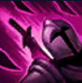
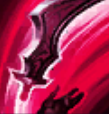
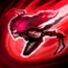

Habilidades

Voracidade
Os Tempos de Recarga de Katarina são reduzidos drasticamente sempre que um Campeão que ela havia causado dano recentemente morrer. Se apanhar uma Adaga, Katarina a usa para cortar todos os inimigos próximos, causando Dano Mágico.

Lâmina Saltitante
Katarina arremessa uma Adaga no alvo. Ela salta em inimigos próximos antes de ricochetear e cair no chão.

Preparação
Katarina recebe um impulso de Velocidade de Movimento e joga uma Adaga para cima.

Shunpo
Katarina desloca-se em direção ao alvo, golpeando-o caso seja inimigo ou golpeando o inimigo mais próximo caso não seja.

Lótus da Morte
Katarina gira em torno de si mesma, disparando adagas muito rapidamente e causando muito Dano Mágico nos 3 Campeões inimigos mais próximos.